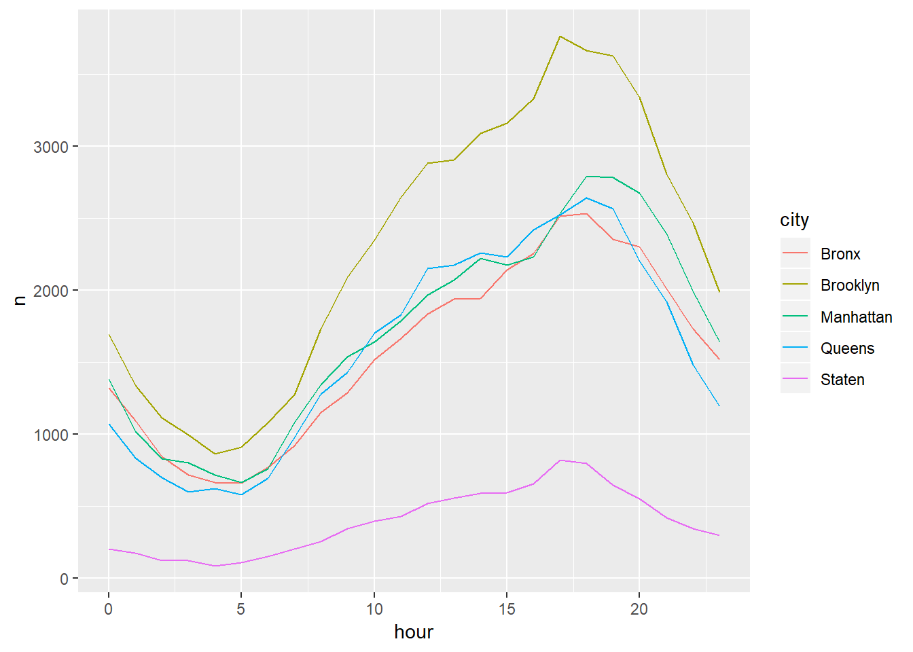

with_detail = read.socrata("https://data.cityofnewyork.us/resource/ibte-hq4u.csv")analysis = with_detail %>%
janitor::clean_names() %>%
separate(arrival_date_time, into = c("date", "time"), sep = " ") %>%
separate(date, into = c("year", "month", "date"), sep = "-") %>%
separate(time, into = c("hour", "minute", "second"), sep = ":") %>%
separate(borough_desc, into = c("code", "city", sep = " - ")) %>%
separate(incident_type_desc, into = c("index", "description", sep = " - ")) %>%
mutate(year = as.integer(year), month = as.integer(month), date = as.integer(date), hour = as.integer(hour), minute = as.integer(minute), second = as.integer(second), index = as.integer(index)) %>%
filter(index < 200 & index >99)## Warning: Expected 3 pieces. Missing pieces filled with `NA` in 2160271
## rows [1, 2, 3, 4, 5, 6, 7, 8, 9, 10, 11, 12, 13, 14, 15, 16, 17, 18, 19,
## 20, ...].## Warning: Expected 3 pieces. Additional pieces discarded in 2225151 rows [1,
## 2, 3, 4, 5, 6, 7, 8, 9, 10, 11, 12, 13, 14, 15, 16, 17, 18, 19, 20, ...].## Warning: Expected 3 pieces. Missing pieces filled with `NA` in 72 rows
## [16669, 78274, 81646, 87343, 105715, 114724, 116976, 121256, 125652,
## 203326, 329345, 337640, 348940, 441730, 470883, 501359, 504527, 546434,
## 580744, 597615, ...].## Warning in evalq(as.integer(index), <environment>): NAs introduced by
## coercionanalysis_adj = analysis %>%
mutate(month = str_replace(month, "3", "Spring"),
month = str_replace(month, "4", "Spring"),
month = str_replace(month, "5", "Spring"),
month = str_replace(month, "6", "Summer"),
month = str_replace(month, "7", "Summer"),
month = str_replace(month, "8", "Summer"),
month = str_replace(month, "9", "Autumn"),
month = str_replace(month, "10", "Autumn"),
month = str_replace(month, "11", "Autumn"),
month = str_replace(month, "12", "Winter"),
month = str_replace(month, "1", "Winter"),
month = str_replace(month, "2", "Winter"),
month = fct_relevel(month, "Spring"))analysis %>%
group_by(hour,city) %>%
summarize(n= n()) %>%
ggplot(aes(x = hour, y = n, color = city))+
geom_line()## Warning: Removed 5 rows containing missing values (geom_path).
labs(title = "Number of Fire incident according to hours")## $title
## [1] "Number of Fire incident according to hours"
##
## attr(,"class")
## [1] "labels"